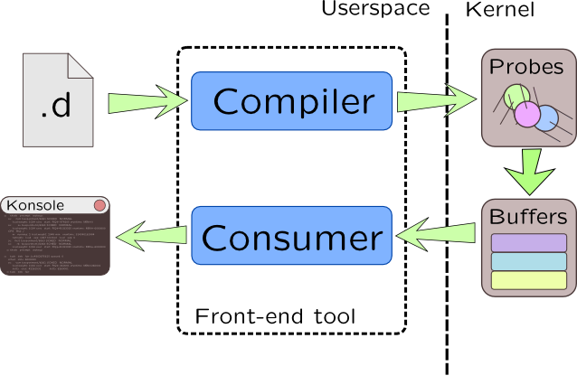

Dynamic tracing
Unlike other approaches, dynamic tracing tool embeds tracing code into working user program or kernel, without need of recompilation or reboot. Since any processor instruction may be patched, it can virtually access any information you need at any place.
Solaris DTrace development was begun in 1999, and it became part of Solaris 10 release. Along with other revolutionary Solaris 10 features, it shaken world of operating systems, and still evolve. You may found more information about DTrace history here: Happy 5th Birthday, DTrace!.
Here are some DTrace information sources:
- Oracle Wiki
- DTrace at SolarisInternals wiki
-
«Solaris Performance and Tools» book
-
«DTrace - Dynamic Tracing in Oracle Solaris, Mac OS X and FreeBSD» book
- Solaris Dynamic Tracing Guide
During course we will refer to Solaris Dynamic Tracing Guide with the following sign: 
DTrace was open-sourced as a part of OpenSolaris, but due to license incompatibility, it can't be merged with Linux Kernel. Several ports existed, but they lacked of proper support. The only stable port is provided in Unbreakable Enterprise Kernel by Oracle for their own Linux distribution which is not wide-spread. There were attempt to develop another clone of DTrace -- DProbes, but it was a failure. Over time three major Linux players: Red Hat, Hitachi, IBM presented dynamic tracing system for Linux called SystemTap. It has two primary sources of information: SystemTap Language Reference to which we will reference with icon  SystemTap Tapset Reference Manual to which we will reference with icon
SystemTap Tapset Reference Manual to which we will reference with icon  . Of course, there is a Unix manual pages, to which we will refer with icon
. Of course, there is a Unix manual pages, to which we will refer with icon  .
.
SystemTap has to generate native module for each script it runs, which is huge performance penalty, so as alternative to it, Ktap is developing. Its language syntax shares some features with SystemTap, but it uses Lua and LuaJIT internally which makes it faster than SystemTap. Modern kernel versions has eBPF integrated, and there is experiment on using it as a platform for generating probe code, but it is far from final stage as of kernel version 4.1. Finally, there is a sysdig which is scriptless.
As name of the book states, it describes SystemTap and DTrace.

Dynamic tracing system logic is quite simple: you create a script in C-like language which is translated to a probe code by a compiler. DTrace scripts are written in D (do not disambiguate with D language from digital mars) have extension .d, while SystemTap scripts have extension .stp and written in SystemTap Language (it doesn't have special name). That probe code is loaded into kernel address space by a kernel module and patches current binary code of kernel. Probes are writing collected data to intermediate buffers that are usually lock-free, so they have small effect on kernels performance and doesn't need to switch context to a tracing program. Separate entity called consumer reads that buffers and writes gathered data into terminal, pipe or to a file.